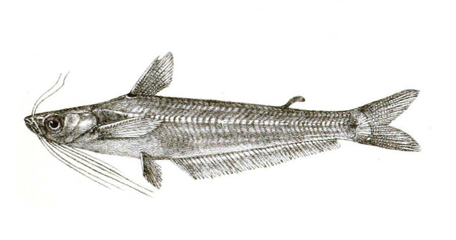

इंडियन पोटासी मछलीIndian Potasi
Pachypterus atherinoides · Schilbeidae · FSH-0056

- Scientific name वैज्ञानिक नाम
- Pachypterus atherinoides (Bloch, 1794)
- Family कुल
- Schilbeidae
- Hindi हिंदी
- इंडियन पोटासी मछली
- Local names स्थानीय नाम
- indian potasi, potasi machhli, regi machhli, patasi, atherinoides
- Status here यहाँ की स्थिति
- native
- Movement आवागमन
- Resident, here all year
- Known from कहाँ दर्ज
- Others have published records from the wider Awadh–Purvanchal plain, none yet from Basti–Ayodhya अवध–पूर्वांचल से दूसरों के प्रकाशित अभिलेख, बस्ती–अयोध्या से अभी नहीं
- IUCN IUCN
- not evaluated
- Review समीक्षा
- not yet reviewed
When to look कब देखें
Present all year. साल भर मौजूद।
Uses and possibilities उपयोग और संभावनाएँ
Drawn from the documented uses in the profile below, where each is labelled traditional, current or a research lead. All uses →
Tell it apart from इनसे अलग पहचानें
इंडियन पोटासी मछली / Indian Potasi
Pachypterus atherinoides (Bloch, 1794) — Schilbeidae
इंडियन पोटासी मछली — नदियों, स्वच्छ नालों और बड़े तालों में पाई जाने वाली एक छोटी, पतली और बहुत सुंदर चांदी जैसी देसी कैटफिश (पोटासी/रेगी) है। इसका शरीर बिना छिलके वाला, चपटा और चमकदार चांदी के रंग का होता है, जिस पर सिर से पूँछ तक तीन से चार बारीक गहरी भूरी धारियाँ होती हैं। इसके मुँह पर आठ मूंछें होती हैं। यह पानी की मध्य परतों में बड़े झुंड बनाकर तेजी से तैरती है और कीड़ों व प्लवक को खाती है। ग्रामीण क्षेत्रों में इसे बहुत स्वादिष्ट और पौष्टिक माना जाता है।
Quick Identification त्वरित पहचान
| Feature | Description |
|---|---|
| Size | Small freshwater catfish; reaches about 15 cm TL (Froese & Pauly 2025) |
| Body Shape | Elongate, strongly compressed laterally, scaleless, and semi-translucent (Bloch 1794) |
| Head & Mouth | Small head; mouth small, subterminal; lower jaw shorter than upper jaw (Talwar & Jhingran 1991) |
| Barbels | Eight barbels: two nasal, two long maxillary, and four mandibular barbels (Talwar & Jhingran 1991) |
| Colour Pattern | Silvery-green dorsally with 3 to 4 distinct dark brown longitudinal stripes along the flank (Talwar & Jhingran 1991) |
| Dorsal Fin | Short with a sharp, finely serrated spine; small adipose fin present (Bloch 1794) |
| Anal Fin | Elongate, carrying 33 to 46 branched rays (Talwar & Jhingran 1991) |
Field tip: Look in slow, clear river channels and oxbow pools. A small, slender, translucent silvery catfish swimming in synchronized schools in midwater, bearing eight barbels and three or four continuous dark longitudinal stripes along the body, is the Indian Potasi.
हिंदी: यह छोटी, चपटी और चांदी जैसी चमकदार कैटफिश है। इसके शरीर पर तीन से चार बारीक काली-भूरी धारियाँ होती हैं और मुंह पर आठ मूंछें होती हैं।
Morphology आकारिकी
Size as given by FishBase (Froese & Pauly 2025):
| Measurement | Range | Source |
|---|---|---|
| Maximum length | 15 cm TL | Froese & Pauly (2025), FishBase |
Adult description:
Pachypterus atherinoides has an elongate, slender, and strongly compressed body (Bloch 1794). The dorsal profile rises slightly from the snout to the dorsal fin origin, while the ventral profile is gently curved (Talwar & Jhingran 1991). The head is relatively small, conical, and compressed, with prominent lateral eyes (Bloch 1794). The mouth is small, transverse, and subterminal, with the upper jaw projecting slightly beyond the lower jaw (Talwar & Jhingran 1991). Teeth are small, sharp, and arranged in narrow villiform bands across the jaws and palate (Jayaram 2006).
Eight barbels are present: one pair of slender nasal barbels reaching beyond the eye; one pair of elongate maxillary barbels extending to the pelvic fin origin or beyond; and two pairs of mandibular barbels situated along the lower chin, reaching the pectoral fin base (Talwar & Jhingran 1991).
The dorsal fin is positioned well forward, carrying a sharp, slender osseous spine serrated along its rear edge and 5–6 soft branched rays (Talwar & Jhingran 1991). A small, delicate adipose fin is present along the posterior dorsum (Jayaram 2006). The pectoral fins are armed with a sharp, finely serrated spine. The anal fin is elongate, carrying 33 to 46 branched rays, running along the posterior half of the ventral profile (Talwar & Jhingran 1991). The caudal fin is deeply forked with equal pointed lobes (Bloch 1794).
Coloration is bright greenish-silver on the back and glistening silvery-white on the flanks and belly (Talwar & Jhingran 1991). Three or four narrow, well-defined dark brown or purplish longitudinal stripes traverse the flanks from behind the head to the caudal fin base (Bloch 1794). A prominent dark spot is situated on the nape ahead of the dorsal fin, and the base of the caudal fin often bears a faint dark patch (Talwar & Jhingran 1991).
हिंदी: इसका शरीर लगभग 15 सेमी तक लंबा, चपटा और बिना छिलके का होता है। पीठ पर एक छोटा कांटा और पेट के नीचे एक लंबा पंख होता है। शरीर पर तीन-चार भूरी धारियाँ साफ दिखाई देती हैं।
Behaviour & Ecology व्यवहार और पारिस्थितिकी
The Indian Potasi is a diurnal and crepuscular pelagic schooling catfish adapted to open freshwater waterways (Talwar & Jhingran 1991). It prefers flowing rivers, perennial streams, canals, and large oxbow lakes with clear to moderately turbid water and sandy or muddy bottoms.
Unlike many benthic, solitary catfishes, Pachypterus atherinoides is intensely social, forming tight, synchronized schools of dozens to hundreds of individuals that swim actively in the middle water column (Jayaram 2006). They patrol open river glides and vegetated canal shallows, using their keen sensory barbels and lateral line system to detect drifting insect larvae and micro-crustaceans (Talwar & Jhingran 1991). When alarmed by aquatic predators or surface shadows, the entire school turns simultaneously in unified evasive darts (Jayaram 2006). They avoid stagnant, heavily hypoxic pools and require reasonable dissolved oxygen levels (Talwar & Jhingran 1991).
हिंदी: यह मछली पानी की बीच की सतह में बड़े झुंडों में बहुत तेजी से तैरती है। यह अन्य कैटफिश की तरह कीचड़ में बैठने के बजाय खुले पानी में घूमकर भोजन तलाशती है।
Life Cycle / Phenology जीवन चक्र
Seasonal phenology in northern Indian alluvial waters across the agricultural year (Talwar & Jhingran 1991; Jayaram 2006):
| Season / Month | Stage | Field Observation |
|---|---|---|
| June–July (Monsoon onset) | Upstream migration | Schools move into flooded river shallows and inundated channels (Talwar & Jhingran 1991) |
| July–August (Kharif peak) | Spawning | Egg deposition occurs in shallow flooded meadows and canals (Jayaram 2006) |
| September–November (Post-monsoon) | Juvenile recruitment | Fry school in open water feeding on zooplankton blooms (Talwar & Jhingran 1991) |
| December–February (Rabi winter) | Deep pool congregation | Schools assemble in sunny, deeper river channels and reservoirs |
| March–May (Summer / Zaid) | Midwater foraging | Heavy feeding on aquatic insects as water temperatures rise (Jayaram 2006) |
Breeding takes place during the southwest monsoon from June to August (Talwar & Jhingran 1991). Rising water levels and rapid river discharges stimulate reproductive readiness. Spawning occurs in shallow, gently flowing floodwaters over submerged vegetation and sandbars. Females shed small, non-adhesive or weakly adhesive eggs that disperse in the current. The eggs hatch after a few days into tiny transparent larvae that develop rapidly in nutrient-rich floodplain nurseries (Jayaram 2006).
हिंदी: बरसात के समय जब नदियों में पानी भरता है, यह उथले पानी में जाकर अंडे देती है। कुछ ही दिनों में अंडों से बच्चे निकल आते हैं और वे तेजी से तैरने लगते हैं।
Diet and Feeding Behaviour आहार
Pachypterus atherinoides is an active carnivorous micro-predator and zooplanktivore (Talwar & Jhingran 1991):
Natural diet components:
- Planktonic micro-crustaceans, including water fleas (Daphnia, Moina), copepods, and ostracods (Jayaram 2006).
- Aquatic insects and larvae, particularly chironomid midges, caddisflies, and mayfly nymphs (Talwar & Jhingran 1991).
- Small terrestrial insects trapped in the surface film, including ants, tiny beetles, and aphids.
- Tiny fish fry and larvae caught in midwater.
- Soft organic detritus ingested while pursuing benthic micro-invertebrates.
हिंदी: यह मांसाहारी मछली है जो पानी के बारीक कीड़ों, मच्छरों के लार्वा, पानी में तैरने वाले सूक्ष्म जीवों (zooplankton) और छोटी मछलियों के बच्चों को खाती है।
Predators / Natural Enemies शत्रु
Documented natural predators in northern Indian alluvial freshwater systems:
- Riverine predatory fishes: Larger catfishes like Wallago attu (Striped Catfish) and Bagarius bagarius (Goonch), and snakeheads like Channa striata (Snakehead Murrel) strike schooling potasi.
- Piscivorous birds: River terns, little egrets, and cormorants hunt midwater schools in clear shallows.
- Freshwater garfish: Xenentodon cancila (Freshwater Garfish) preys on potasi near the water surface.
- Smooth-coated otters: Pursue schools in perennial river reaches.
हिंदी: बोआल, गूंज, सौर और सुइया मछली पानी के नीचे से इस पर हमला करती हैं। बगुले और पनकौवे इसे पानी से झपट लेते हैं।
Agricultural / Human Relevance कृषि प्रासंगिकता
Nutritional and food value: The Indian Potasi is a popular and nutritious small indigenous food fish across northern and eastern India. It is captured in substantial quantities by commercial and subsistence fishers using cast nets, shore seines, and gill nets in major river systems like the Ghaghara, Kuwano, and Rapti. Because it is consumed whole, it supplies vital animal protein, calcium, phosphorus, and essential fatty acids to rural families at an affordable price.
Aquarium ornamental trade: Its active schooling behavior, striking longitudinal stripes, and iridescent silvery sheen have made it an attractive indigenous catfish for the ornamental aquarium hobby.
Traditional: A traditional, easily digested food fish cooked in light curries by riverine households.
Today: Sold fresh in rural fish markets (haats) as a prized, sweet-tasting small catfish.
Research direction (a lead, not a result): Assessing captive breeding methods for Pachypterus atherinoides to replenish riverine stocks impacted by barrage construction.
हिंदी: यह एक बहुत स्वादिष्ट, मीठी और पौष्टिक छोटी कैटफिश है जिसे ग्रामीण लोग बड़े चाव से खाते हैं। इसे पूरा खाया जाता है जिससे शरीर को भरपूर कैल्शियम और प्रोटीन मिलता है।
Expected Locally स्थानीय रूप से अपेक्षित
Not a field record. Written from published accounts for eastern Uttar Pradesh. No confirmed local sighting yet — if you have seen it, that is what the atlas needs.
अभी तक स्थानीय पुष्टि नहीं। यह विवरण प्रकाशित स्रोतों से है, किसी अवलोकन से नहीं।
The Indian Potasi is expected across eastern Uttar Pradesh in perennial rivers, clear flowing streams, oxbow lakes (tals), and major canal systems. Look in midwater shallows and clear river pools from August through January. GBIF holds published records from the wider Awadh–Purvanchal plain, none yet from Basti–Ayodhya. A clear photograph showing the slender silvery body, eight barbels, long anal fin, and dark longitudinal stripes, submitted via the About page, would confirm the first local documentation for the project area.
Distribution वितरण
Global range: Widespread across South Asia, natively occurring in India, Pakistan, Nepal, and Bangladesh (Talwar & Jhingran 1991).
In India: Distributed throughout the Indus, Ganges, Brahmaputra, Mahanadi, Godavari, and Krishna river basins, from foothill streams to the plains (Menon 1999).
In Uttar Pradesh: Recorded throughout the Ganges, Ghaghara, Rapti, Gomti, and Sarda river networks and large canal systems.
In Basti district / eastern UP: Expected as a resident native species in the Ghaghara and Kuwano river basins and associated floodplain waters.
हिंदी: यह भारत, पाकिस्तान, नेपाल और बांग्लादेश की नदियों में पाई जाती है। उत्तर प्रदेश में घाघरा और कुआनो नदी प्रणालियों में यह सामान्य रूप से उपस्थित है।
Research Questions शोध प्रश्न
- How do seasonal alterations in river flow downstream of irrigation barrages affect schooling behavior in Pachypterus atherinoides? / बैराज से पानी कम होने पर इस मछली के झुंडों पर क्या असर पड़ता है?
- What are the specific zooplankton prey preferences across monsoon and post-monsoon months?
- How do agricultural pesticide runoffs during the kharif season influence juvenile survival in floodplain channels? / खेतों के कीटनाशकों का इस मछली के बच्चों पर क्या प्रभाव पड़ता है?
- Can Pachypterus atherinoides be maintained in community ponds without disrupting major carp fry?
- What are the critical dissolved oxygen thresholds for Pachypterus atherinoides during winter low-flow periods?
Similar Species मिलती-जुलती प्रजातियाँ
| Species | How to tell apart | हिंदी | |
|---|---|---|---|
| Mystus vittatus ([[striped_catfish\ | Striped Catfish]]) | Body deeper; anal fin much shorter (9–12 rays); adipose fin large and prominent | स्ट्राइप्ड कैटफिश — शरीर अधिक गहरा, पेट का पंख छोटा और पीठ पर बड़ा चर्बी वाला पंख |
| Ailia coila ([[gangetic_ailia\ | Gangetic Ailia]]) | Dorsal fin completely absent; adipose fin very small; body more paper-thin and translucent | गैंगेटिक आइलिया — पीठ पर पंख बिल्कुल नहीं होता और शरीर बहुत पतला होता है |
| Mystus tengara ([[tengra\ | Tengra]]) | Body deeper; anal fin short; possesses a very long adipose fin and stout dorsal spine | टेंगरा — शरीर गहरा होता है, पेट का पंख छोटा और पीठ पर बड़ा कांटा होता है |
Field rule: A slender, elongate, midwater-schooling scaleless catfish with eight barbels, a small dorsal fin, a long anal fin of 33–46 rays, and 3–4 distinct dark longitudinal stripes along the body, is Pachypterus atherinoides.
हिंदी: स्ट्राइप्ड कैटफिश और टेंगरा का शरीर चौड़ा होता है और उनका पेट का पंख छोटा होता है, जबकि इंडियन पोटासी पतली होती है, इसके पेट का पंख बहुत लंबा होता है और शरीर पर तीन-चार धारियाँ होती हैं।
Taxonomy & Classification वर्गीकरण
Original description. Described by Marcus Elieser Bloch in 1794 as Silurus atherinoides in Naturgeschichte der ausländischen Fische, Volume 8, page 48, plate 371, figure 1. Type locality: Malabar coast, India.
Subspecies. Monotypic — no subspecies are recognized across its continental range.
Family and order placement. Order Siluriformes, family Schilbeidae (placed by some authorities in Horabagridae or Ailiidae). The genus Pachypterus Swainson, 1838, comprises small, compressed Asian schilbeids.
Phylogenetic notes. Long treated in the literature under the generic name Pseudeutropius Bleeker, 1862. Taxonomic revisions have established that Pachypterus Swainson, 1838, is the senior valid generic name for this taxon (Talwar & Jhingran 1991).
IUCN status rationale. Not evaluated (NE) on the global IUCN Red List of Threatened Species. It maintains widespread, abundant wild populations across South Asian river systems.
हिंदी: इसका वैज्ञानिक नाम Pachypterus atherinoides है और यह Schilbeidae परिवार की सदस्य है। इसे पुरानी पुस्तकों में Pseudeutropius atherinoides लिखा गया है।
Photo Gallery फोटो गैलरी
No photos yet — add field photos to media/species/indian_potasi/ and run node scripts/sync_photos.js.
Photos needed आवश्यक फोटो
- [ ] Lateral view of adult specimen showing silvery flanks and dark longitudinal stripes (चांदी जैसे शरीर और धारियों की तस्वीर)
- [ ] Close-up of head showing the eight barbels and subterminal mouth (सिर और आठ मूंछों का स्पष्ट दृश्य)
- [ ] View of elongate anal fin and small dorsal fin (पेट के लंबे पंख और पीठ के पंख का दृश्य)
- [ ] Live school swimming in midwater in an aquarium or clear pool (पानी में तैरता झुंड)
References संदर्भ
- Bloch, M. E. (1794). Naturgeschichte der ausländischen Fische, Vol. 8. Morino & Co., Berlin, p. 48, pl. 371, fig. 1.
- Talwar, P. K. & Jhingran, A. G. (1991). Inland Fishes of India and Adjacent Territories, Vol. 2. Oxford & IBH Publishing Co., New Delhi, pp. 608–609.
- Menon, A. G. K. (1999). Check list - fresh water fishes of India. Records of the Zoological Survey of India, Occasional Paper No. 175, p. 235.
- Jayaram, K. C. (2006). Catfishes of India. Narendera Publishing House, Delhi, pp. 124–126.
- Froese, R. & Pauly, D. (Eds.) (2025). FishBase. World Wide Web electronic publication.
- GBIF Occurrence Data — Pachypterus atherinoides, India (2025).
Source file: species/fauna/fish/indian_potasi.md